- 2019 à aujourd'hui – Professeur particulier en Sciences (Secteur du Grand Figeac)
- Primaire et collège : aide aux devoirs toutes matières, cours de mathématiques et de sciences
- Lycée : cours de Sciences de la Vie et de la Terre (filière générale et spécialité)
- 2019 à 2020 – Professeur de Sciences de la Vie et de la Terre (Collège Sainte-Hélène, Gramat)
- Enseignement des SVT de la 6e à la 3e
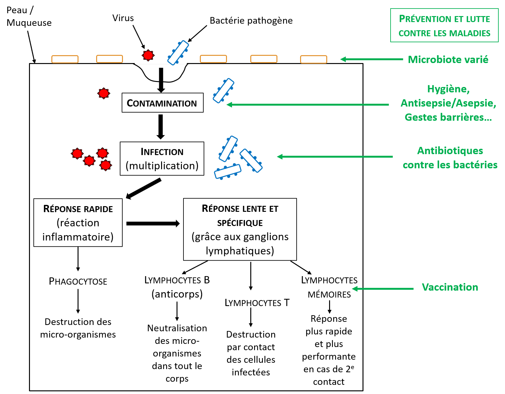
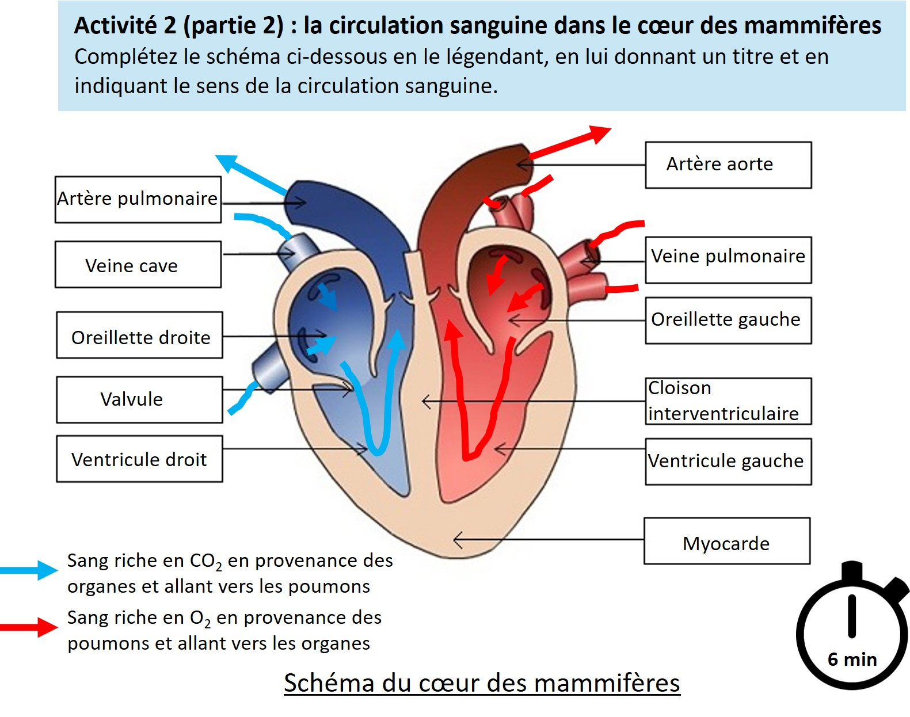
- 2012 à 2018 – Hydrobiologiste – indépendante (Allinges, France) et Enseignante vacataire (Université Savoie Mont Blanc, France)
- Gestion et coordination de mandats
- Enseignement en Licence et Master
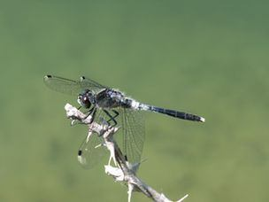
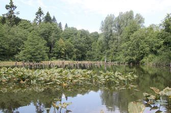
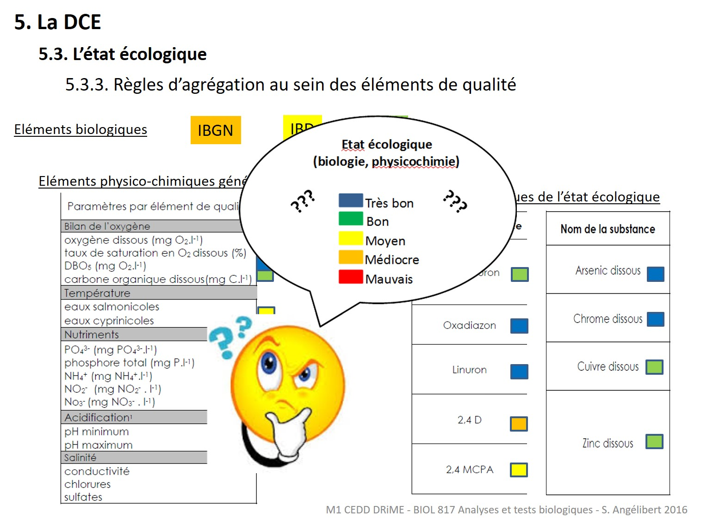
- 2006 à février 2012 – Adjointe Scientifique HES à la Haute école du paysage, d’ingénierie et d’architecture de Genève (Hepia – Genève, Suisse)
- Recherche de financements et montage de projets Ra&D en lien avec les zones humides et leur biodiversité
- Réalisation de mandats et prestations de service
- Gestion et coordination des projets Ra&D
- Collecte et analyse des données
- Communications scientifiques et grand public : articles, conférences, séminaires
- Enseignement en Licence et Master
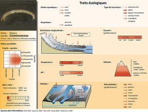
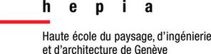
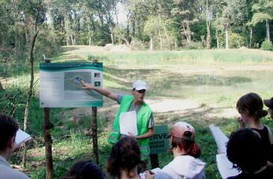
- 2005 à 2006 – Post-Doctorat à la Haute école du paysage, d’ingénierie et d’architecture de Genève (Hepia – Genève, Suisse) et au Pond Conservation (Oxford Brooks University, Angleterre)
- Organisation de bases de données biologiques
- Analyse statistique des données biologiques
- Communications scientifiques : conférences internationales
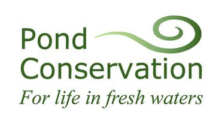
- 2004 à 2005 – Ingénieur de recherche au Laboratoire d’Ecologie des Hydrosystèmes (LEH – Université Paul Sabatier, Toulouse, France)
- Communications scientifiques : articles, conférences internationales
- Elaboration de protocoles de terrain pour le suivi de populations de macroinvertébrés aquatiques et de libellules adultes
- Collecte et analyse statistique des données
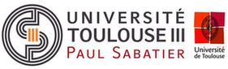
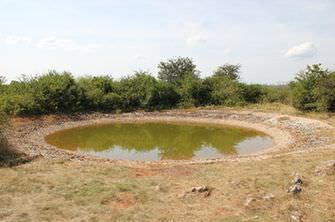
- 2003 à 2004 – Attaché Temporaire Enseignement Recherche en Biologie Animale au Centre Universitaire Jean-François Champollion (Albi, France)
- Enseignement en Licence 1ère année : Organisation du monde vivant, Biologie Animale
- Enseignement en Licence 2ème année : Anatomie comparée et physiologie des Vertébrés
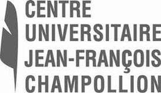
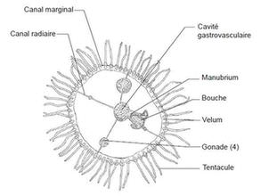
- 2000 à 2004 – Doctorat au Laboratoire d’Ecologie des Hydrosystèmes (LEH - Université Paul Sabatier, Toulouse, France). Etudes des mares du Parc Naturel Régional des Causses du Quercy : fonctionnement, biodiversité et connectivité inter-mares. Propositions pour l’entretien et la sauvegarde.
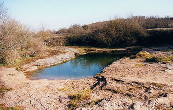
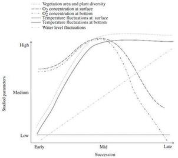